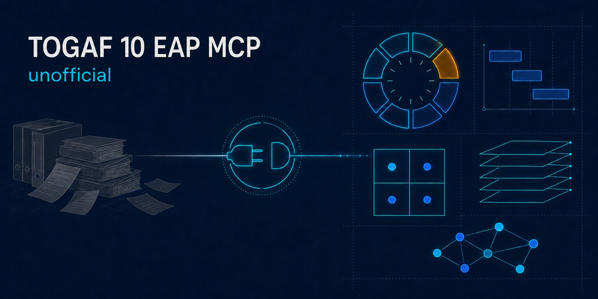
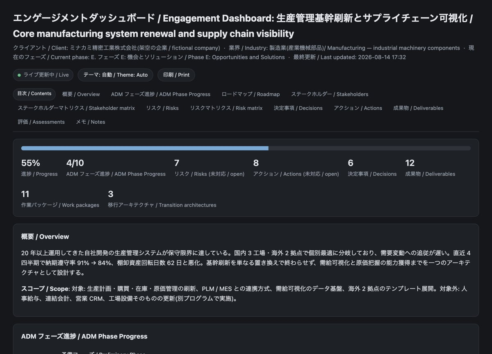
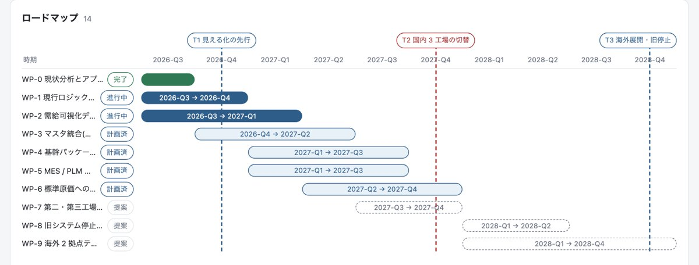

関係者の利害の衝突を見つける
営業本部長「早く見積を出したい」と生産管理部長「確定してから出したい」を、根拠にした関心事つきで対立として挙げます。争点・放置したらどうなるか・いつ誰が裁くかまで返します。見つからないときは捏造せず「検出できなかった」と言い、手で見る観点を示します。
stakeholder_matrix
Unofficial · MCP server · TypeScript · stdio
TOGAF® Standard 10th Edition(EA Practitioner 体系)をベースにした、非公式のコンサルティング MCP サーバーです。 Claude Code / Claude Desktop に入れて、日本語で話しかけるだけで使えます。
どちらも「基幹システムの刷新をやりたい」という同じ相談です。制約だけを変えて 2 回呼びました。 下は加工していない実出力から、各節の先頭項目を抜いたものです。
SITUATION A
予算は5億円、9月18日の経営会議で決裁を取りたい。専任は3名。
読み取った状況
予算(金額) 5 億円
期限(日付) 2026年9月18日(残り 32 日)
体制(人数) 専任 3 名
今日やること(先頭)
残り 32 日。逆算すると、資料の確定は 9月4日(2 週間前)、キーパーソンへの事前説明は 8月21日(4 週間前)が折り返し点。当日に初めて見せる資料を作らない。
この桁は一括では管理できないので、3〜5 本の作業パッケージに割る(1 本あたり 1.3 億円 前後)。一括発注にすると、遅れていることが分かるのが最後になる。
最初に聞く質問
動かせない日付は何で、それは何によって決まっていますか(契約 / 法規制 / 経営の対外公約)?
SITUATION B
予算はゼロ、経営は無関心、担当は自分ひとり。
読み取った状況
予算 予算が無い
経営の関与 経営が関与していない
体制 実質ひとり体制
今日やること(先頭)
対象を 1 業務・1 データに固定し、そこだけを「現状 / あるべき / 差分」の 3 段で 1 枚にまとめる。全社を描こうとした時点で予算も時間も足りなくなる。
その 1 枚に金額を 1 つだけ載せる。予算要求は「これから使う額」ではなく「今失っている額」から始まる。
最初に聞く質問
次に予算を検討する場はいつで、そこに載せるには何がいつまでに要りますか?
TOGAF の実務上の問題は「分厚い・抽象的・文書中心で、結局いま何をすればいいか分からない」ことです。そこを狙っています。
営業本部長「早く見積を出したい」と生産管理部長「確定してから出したい」を、根拠にした関心事つきで対立として挙げます。争点・放置したらどうなるか・いつ誰が裁くかまで返します。見つからないときは捏造せず「検出できなかった」と言い、手で見る観点を示します。
stakeholder_matrix報告書・台帳・指摘一覧から、リスク・関係者・要件・アクションを出典行番号つきで抽出します。2 段組の PDF で行が文の途中から切れていれば、繋いでから判定し、繋げない断片は件数を報告して外します。
ingest_document · extract_from_document同じ対象に違う数値、同じ組織の別表記、揃っていない単位、出典の無い項目。実文書では「101,800 名」と「12 万人」を差 15.2% として、「670 名」と「670 名以上」を同じ数の別表現として指摘しました。断定はせず、確認してくださいの形で返します。
inspect_findingsすべての項目に出典と確度(記載あり / 推測 / 出所不明)が付きます。印刷して配られる資料にも列として出るので、会話の外に出たあとも、どこが裏取り済みかが分かります。
export_report能力マップ、バリューストリーム、ADM サイクル、ロードマップのガント、C4 コンテキスト図を Mermaid で返します。GitHub や Issue にそのまま貼れます。ArchiMate は Archi 取り込み用の CSV / Open Exchange XML で書き出せます。
diagram_capability_map · export_archimate_csv案件を更新するたびに SSE で画面が更新されます。四半期ロードマップ、リスクのヒートマップ、印刷用 CSS、ダークモード。PDF や画像を渡すのが面倒なときは、ブラウザに投げて Claude に読ませる入口もあります(任意)。
open_dashboard · open_start

ツール名を覚える必要はありません。Claude に頼むところから始められます。
自分で入れる場合はこれだけです。
# clone してビルド git clone https://github.com/Waganawa-Megumin/togaf10_EAP_MCP.git cd togaf10_EAP_MCP && npm install && npm run build # Claude Code に登録 claude mcp add togaf-eap -- node "$PWD/dist/index.js"
あとは話しかけるだけです。
13 人のペルソナが実際に使い、実在の公開文書 32 ページで評価した結果を反映しています。
推測で埋めるより、読み取れないと言うほうが役に立つ、という方針で作っています。